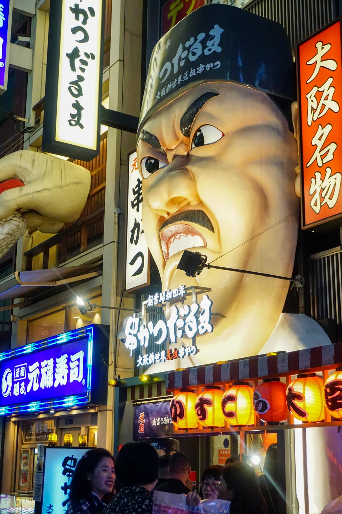
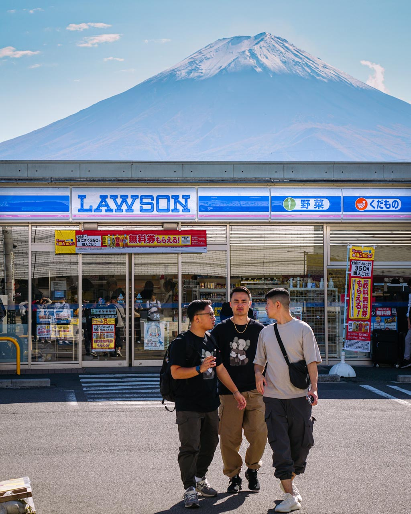
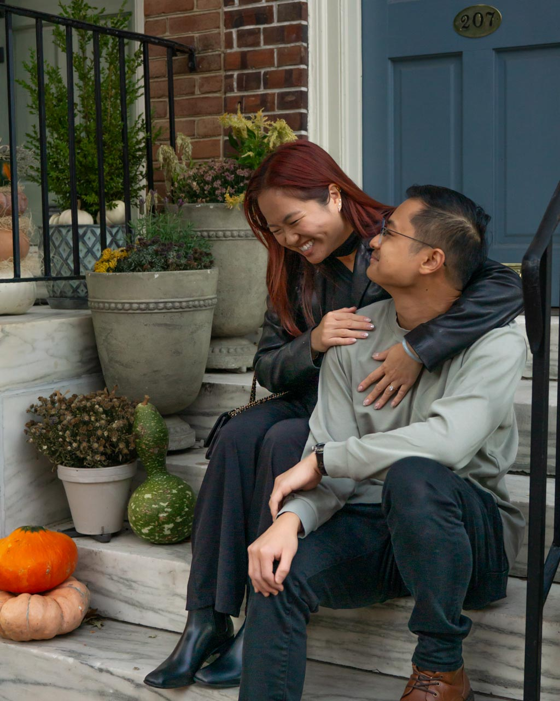
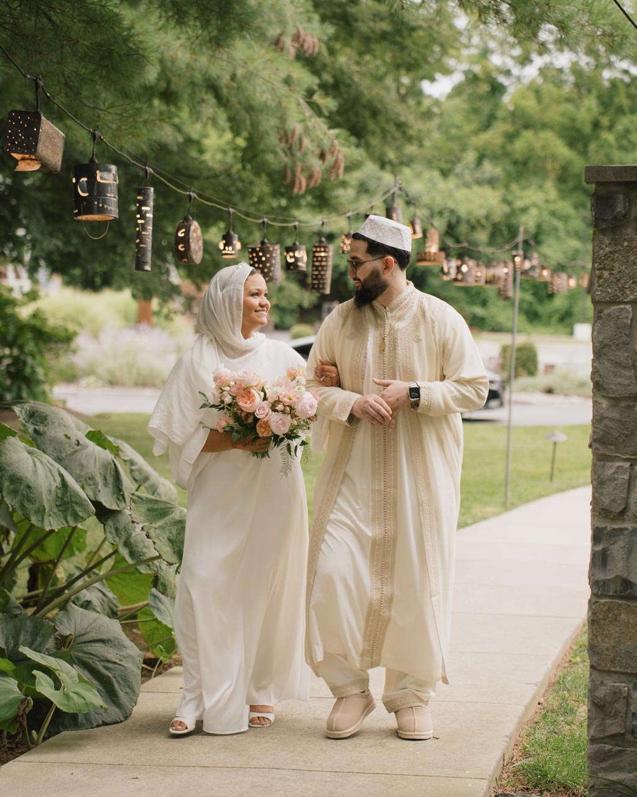
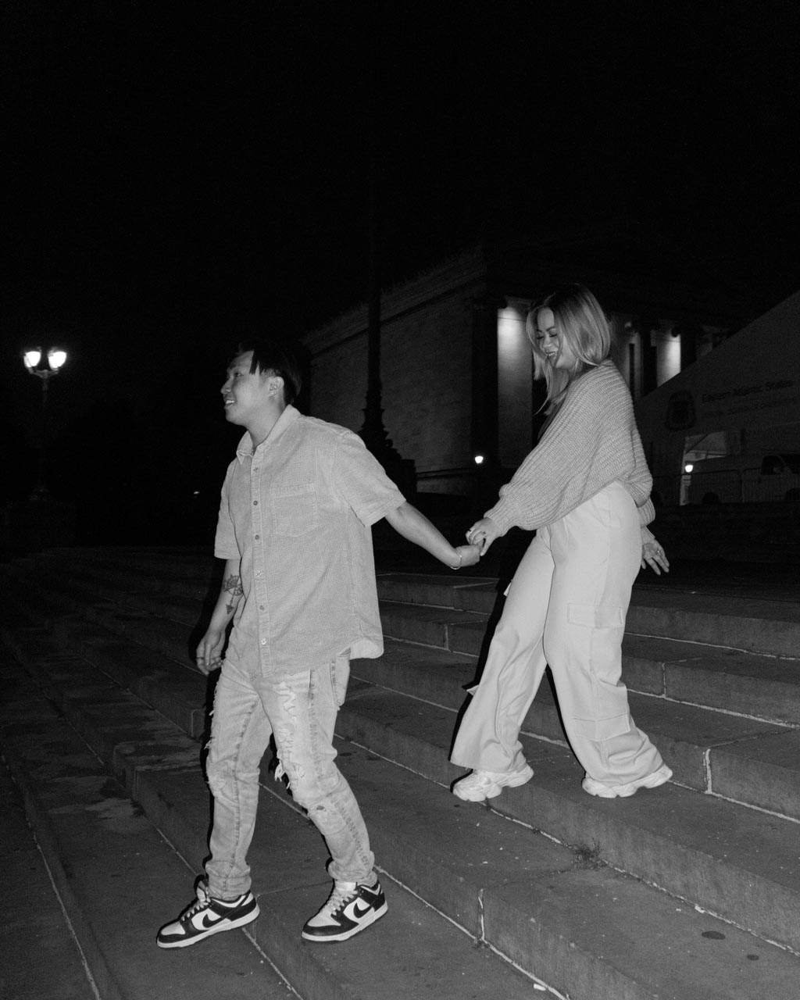
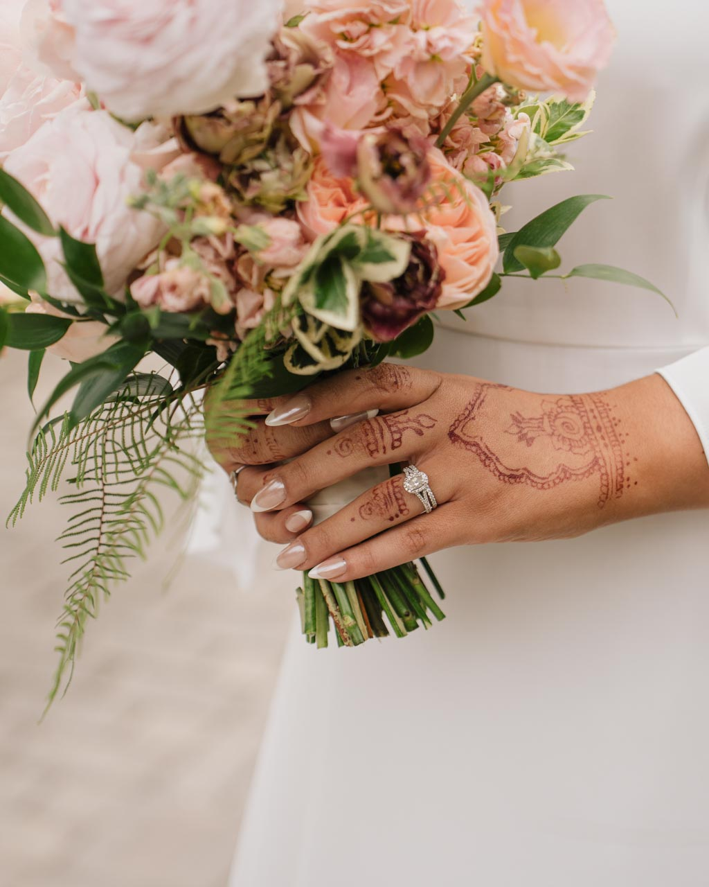
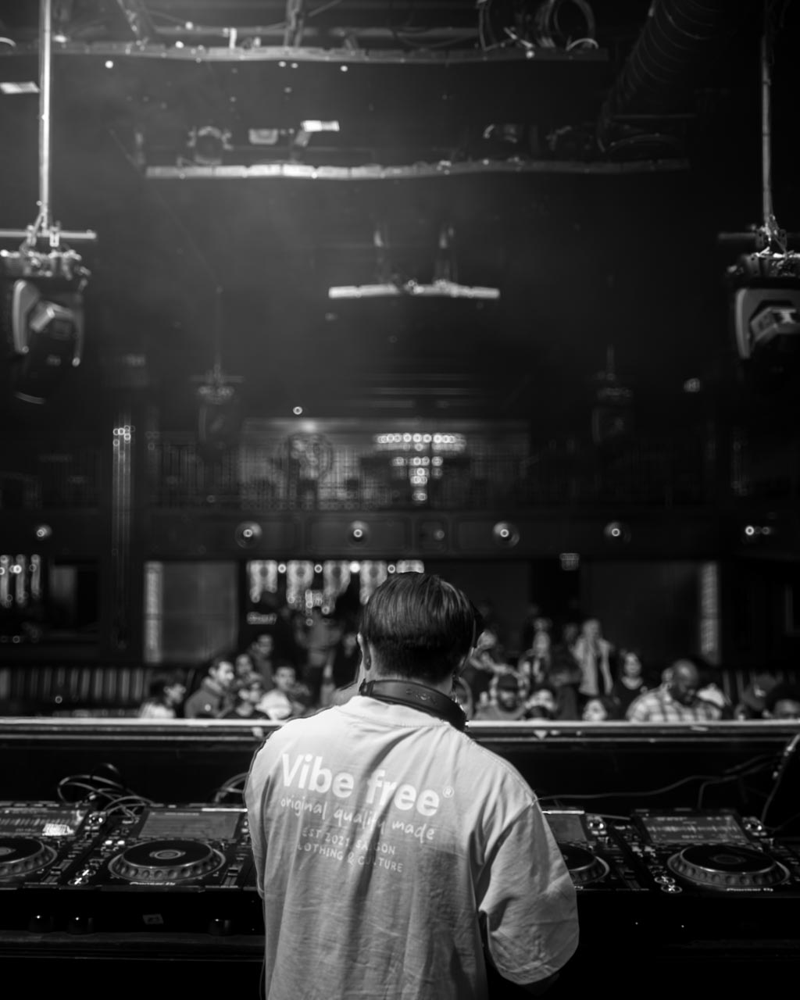
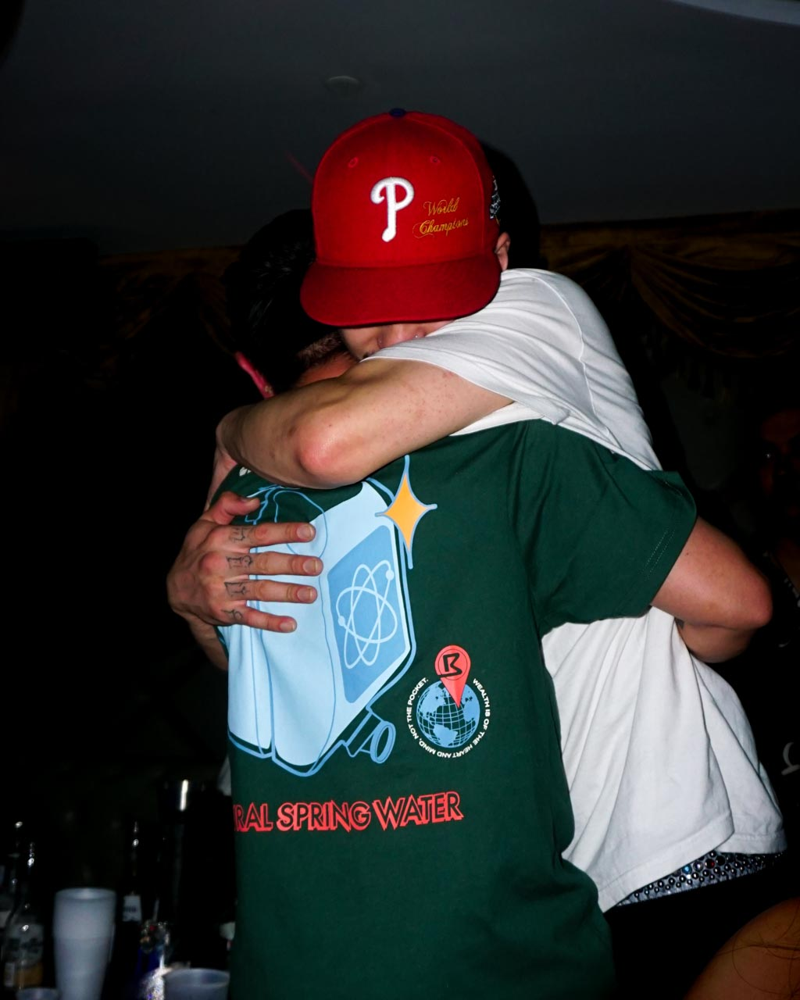
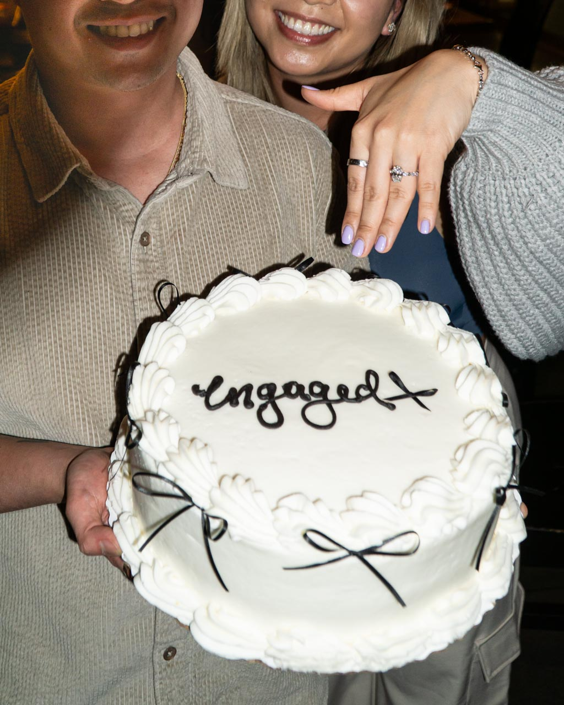
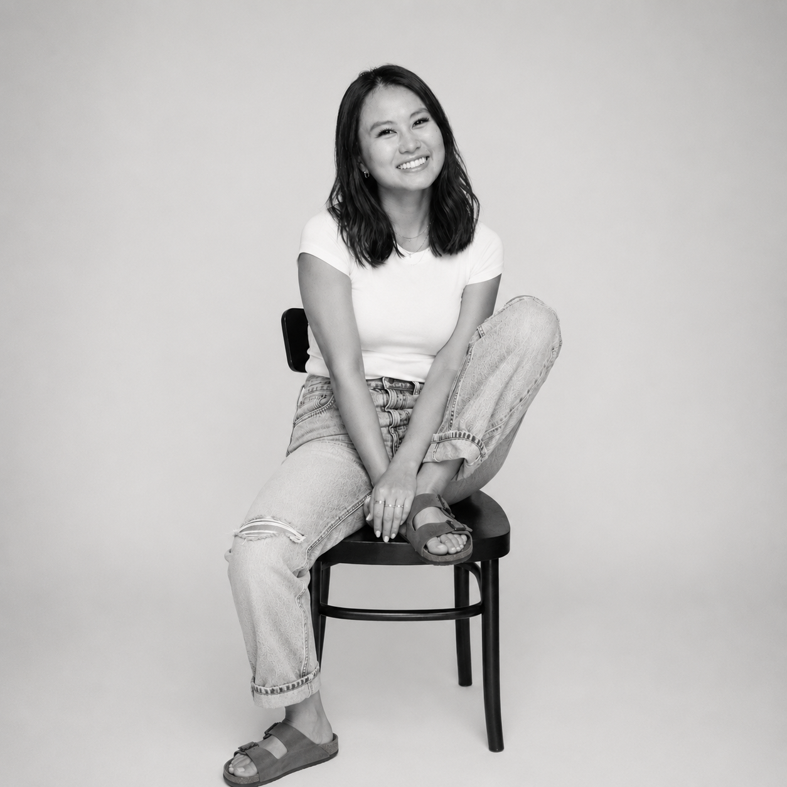

This is a private portfolio. Enter the password to continue.
I'm Cindy Nguyen, a UX designer who started in biology and ended up here, which honestly makes a lot of sense. I'm drawn to systems, to the logic underneath things, and to making something complex feel like it was always simple. I work in fintech and operations, and I bring a visual-forward perspective to a space that usually leads with function over form.
It started as a creative outlet and quietly became a practice that sharpens how I see — the light, the composition, the weight of a place. It makes me a more patient designer, even when I'm not thinking about design at all.









Leading the UX transition of a retiring third-party careers platform onto SEI's global marketing site — preserving three countries' worth of content while creating a seamless handoff to Workday.
The existing third-party careers platform was being retired. The task: migrate all careers content to SEI's global marketing site — without the ability to host job listings directly. The destination site also couldn't replicate the original's three-country structure, creating a significant information architecture challenge.
The careers site is the first touchpoint for prospective employees. Getting the transition wrong meant losing candidates before they even reached an application. The experience needed to educate visitors about SEI and then guide them seamlessly to Workday to apply — with no friction, no dead ends.
As UX lead, I owned the audit of the current site — determining what content was still relevant and what needed updating before the transition. I also rebuilt the site map to maintain the spirit of the three-country structure on a global scale. I collaborated with project management, content owners, copywriters, and the Talent Acquisition and People & Culture teams throughout.
A reimagined careers section on seic.com that educates visitors about SEI as an employer, then creates a clear, intentional transition to Workday for all job-related actions. The global site map resolved the three-country challenge by embracing a unified structure with regional nuance built in.
Establishing design systems and guidelines for a global company's social media presence — so every post, across every market, feels distinctly SEI.
Creatives across SEI's business markets and segments were inconsistent — different teams producing assets with no shared visual language. The company needed a stronger, more distinguishable brand presence on social channels, particularly LinkedIn, without stripping each market of its core messaging.
Inconsistency at scale erodes brand trust. Helping designers stay on-brand while creating assets that genuinely serve each segment's audience was both a creative and a business-critical challenge.
I own the social media visual templates that live inside Figma, used daily by an in-house team of ~5 core designers. My contributions spanned auditing current templates, competitive landscape research, recommending solutions, implementing in workflow, and communicating directly with the core users of the system.
A visual template overhaul focused on clarity and boldness. Key updates included:
Restructuring and reimagining seic.com's homepage with an audience-centric focus — so visitors could self-identify and immediately reach content relevant to them.
Visitors were getting lost within seic.com and unsure which content was relevant to them. Because SEI serves multiple audience segments with different needs — institutional investors, financial advisors, private wealth clients — the homepage offered no clear entry point. The result was high abandonment and a confusing user journey across segments.
Without a way to self-identify, visitors were left to navigate a site designed for many but optimized for none. The business needed a way to drive engagement and generate qualified leads — and that started at the front door.
I assisted in executing the heuristic test and surveyed 40 individuals with 3 homepage options. Working alongside a UX strategist, analytics team, and frontend and backend developers, I led the wireframing and UI design, including the creation of a brand-new component: the audience selector pills.
A simplified, decluttered homepage anchored by audience selector pills. Visitors are prompted to self-identify at entry, then guided to their relevant content section — with their selection persisting via an audience dropdown throughout their entire site experience, confirming they're always in the right place.

I started college studying biology - pre-dental track, the whole thing. Then I took a design class on a whim and something clicked that hadn't clicked before. I switched paths, which felt risky at the time and obvious in hindsight. Turns out studying living systems and designing digital ones aren't that different: both are about understanding how things connect, where friction lives, and what it takes to make something feel effortless.
Now I'm a UX designer working in fintech and operations, the kind of design that has to earn trust fast and never get in the way. I care a lot about craft, and maybe a little too much about getting the details right.
Off the clock, I'm somewhere with a camera and probably a bowl of something warm. Photography taught me to slow down and actually look - which, it turns out, makes me a better designer too.